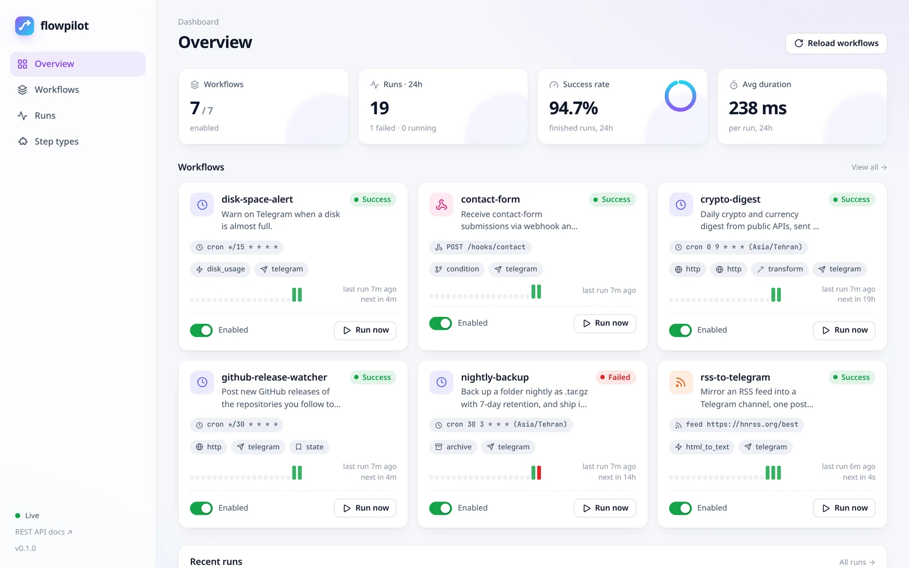
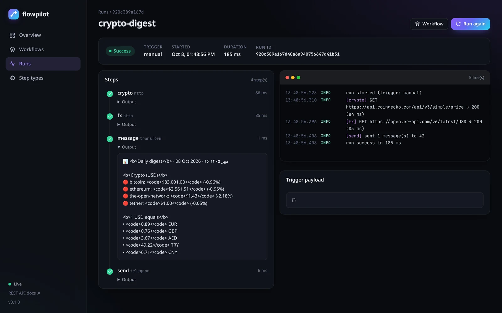
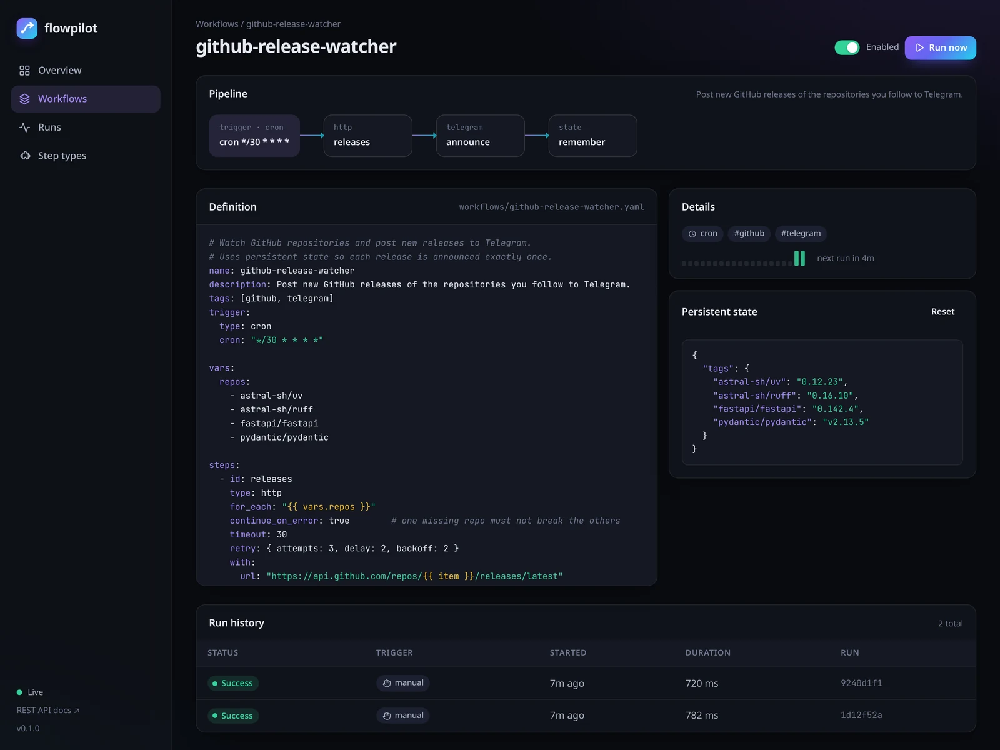

flowpilot is a lightweight, self-hosted workflow engine. Describe triggers and steps in readable YAML, keep them in Git, and get retries, persistent state, a live dashboard and first-class Telegram support — in a single Python process.
pipx install "git+https://github.com/mrzroot/flowpilot.git"
No Redis, no Postgres, no Node, no build step. Just Python, SQLite and your YAML files.
YAML or Python files you can diff, review and version. flowpilot validate catches typos in step types and parameters before they run.
Messages, files, photos and any Bot API method. Long messages are split automatically; use your own Bot API server or a proxy if needed.
Cron with time zones, intervals, webhooks with secrets or GitHub signatures, file watchers, RSS/Atom feeds and manual runs.
Per-step timeouts, retries with exponential backoff, on_failure handlers, concurrency limits and crash recovery.
Watch run logs stream in real time over SSE, browse history, trigger runs and toggle workflows — dark or light, on desktop or phone.
Decorate a Python function with @step and use it in YAML, or ship steps as a package through entry points.
Each workflow is a trigger plus steps. Steps can reference earlier results, the trigger payload, environment secrets and persistent state through Jinja2 templates.
# workflows/uptime-monitor.yaml name: uptime-monitor trigger: { type: interval, seconds: 120 } vars: sites: [https://example.com, https://www.python.org] steps: - id: check type: http for_each: "{{ vars.sites }}" retry: { attempts: 2, delay: 3 } continue_on_error: true with: { url: "{{ item }}", fail_on_error: false } - id: alert # only when the status changes type: telegram for_each: "{{ steps.check.results }}" if: "{{ (item.ok and item.output.ok) != (state.up or {}).get(item.item, true) }}" with: text: "🔔 {{ item.item }} changed state" - id: remember type: state for_each: "{{ steps.check.results }}" with: { merge: { up: { "{{ item.item }}": "{{ item.ok and item.output.ok }}" } } }
Every example is validated in CI; the API-based ones use free public endpoints and need no keys.
Announce every new release of the repositories you follow — exactly once.
intervalGet a Telegram alert when a site goes down, and another when it recovers.
cron · Asia/TehranCrypto prices and exchange rates every morning at 09:00, with the Jalali date.
feedOne clean channel post per new feed entry, no duplicates.
crontar.gz archives with retention, uploaded to Telegram, with an alert on failure.
webhookTurn website form submissions into Telegram messages, protected by a secret.


flowpilot was born in Mashhad, Iran, where most notifications end up in Telegram. That shows in the details.
Point TELEGRAM_API_BASE at a self-hosted Bot API server or reverse proxy, or route requests through HTTPS_PROXY / SOCKS.
The jalali filter formats Solar Hijri dates and fa_digits converts numbers to Persian digits.
Send to users, groups, channels or forum topics; silent messages, HTML or MarkdownV2 with an escaping filter.
Upload local files (like nightly backups) or send photos and documents by URL.
Install straight from GitHub (it is not on PyPI), scaffold a project and open the dashboard.
# 1. install pipx install "git+https://github.com/mrzroot/flowpilot.git" # 2. create a project and try it flowpilot init my-automations && cd my-automations flowpilot run hello # 3. serve the dashboard, API and triggers flowpilot serve # → http://127.0.0.1:8080 # or with Docker git clone https://github.com/mrzroot/flowpilot && cd flowpilot mkdir project && docker compose up -d